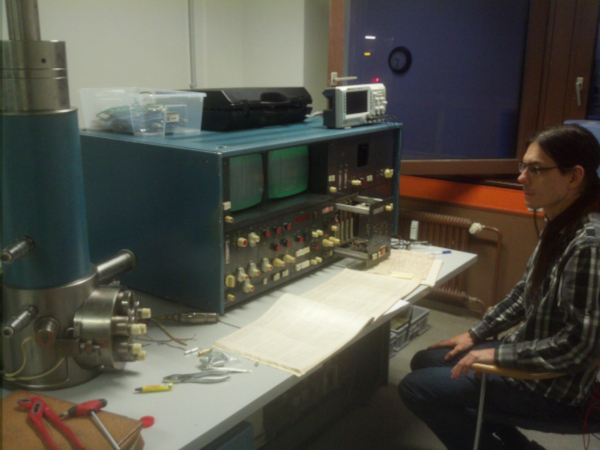

Seit September 2018 verfügen wir auch über ein Rasterelektronenmikroskop. Das Gerät wurde Ende der 70er gebaut und stammt ursprünglich aus Tschechien, wurde später eine Weile von der Bundesanstalt für Materialforschung und -prüfung (BAM) in Berlin genutzt, anschließend von W-Präzisionstechnik verwendet und schließlich von uns erworben.
Das vollständig analoge Gerät wird zurzeit von uns grundüberholt (wackelige Potentiometer austauschen, defekte Mikrotaster ersetzten, halb-defekte Vakuum-Steuerung reparieren) und kalibriert. Anschließend soll ein digitales Interface geschaffen werden.
Album mit Bildern vom REM {% endblock mainbox %}